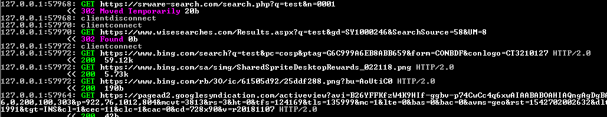

SRWare Iron
SRWare Iron é um navegador web gratuito e uma implementação do Chromium pela SRWare da Alemanha.
Nível de Spyware: EXTREMAMENTE ALTO
O SRWare Iron afirma ser um navegador Web que respeita a privacidade e é uma alternativa ao spyware Google Chrome e especificamente, se autodenomina um navegador Web que respeita a privacidade e que visa oferecer aos usuários a experiência do Chrome sem o spyware do Google. No entanto, ao examinar este programa, essas alegações se invalidam instantaneamente. O SRWare Iron se conecta a uma quantidade absolutamente incrível de rastreadores e abre conexões para uma enorme quantidade de servidores em sua primeira execução. Ele faz uma estimativa aproximada de ~400-500 conexões não solicitadas, e, na verdade, levou vários minutos para parar de fazer novas requisições e conexões. O SRWare Iron usa o mecanismo de busca de spyware Bing como seu mecanismo de busca padrão, mas vai além disso e encaminha suas requisições para o Bing através de seus próprios servidores para que ele possa espionar suas pesquisas na Internet também. A conclusão é que este navegador é apenas mais uma falsa iniciativa de privacidade e realmente não é melhor que o Chrome.
A versão 69.0.3600.0 do SRWare Iron foi testada no Windows 7 de 64 bits. MITMproxy, Microsoft Network Monitor 3.4 e Sysinternals ProcMon foram usados para monitor o comportamento deste programa.
Iniciativa de Privacidade Falsa
A SRWare Iron afirma em seu site que é:
"O Chrome é satisfatório por ter uma renderização de site extremamente rápida, um design elegante e recursos inovadores. Mas também recebe críticas de especialistas em proteção de dados, por motivos como a criação de um ID de usuário exclusivo ou o envio de entradas ao Google para gerar sugestões. O SRWare Iron é uma alternativa real. O navegador é baseado no Chromium e oferece os mesmo recursos que o Chrome, mas sem os pontos críticos que diz respeito à privacidade." [1]
A realidade é que você está apenas trocando um produto spyware por outro. Onde o spyware do Chrome foi removido, o spyware do Iron está lá para substituí-lo. Qual veneno você irá tomar? A pior parte é que as pessoas vão ler o que é afirmado no site da SRWare e acreditar sem fazer nenhum teste por si mesmas. Como este artigo [web.archive.org] que apenas copia a lista de comparação do site da Iron sem qualquer investigação real antes de declará-la uma alternativa de privacidade ao Chrome. A coisa mais audaciosa sobre isso é esta citação incrível na seção de FAQ do naveador Iron:
"Posso realmente verificar se o Iron não envia nenhum dado privado, como você diz? Sim, você pode. Existem ferramentas como o Wireshark, que varre todo o tráfeo da rede. Não conseguimos reconhecer nenhuma atividade óbvia. Mas você pode provar isso pro si mesmo." [2]
Que é uma pérola no contexto do que realmente é encontrado ao executar testes no software.
Grande quantidade de conexões na primeira inicialização
Ao iniciar o SRWare Iron pela primeira vez, ele abrirá imediatamente as duas páginas a seguir: https://iron.start.me/us e https://www.srware.net/en/software_srware_iron.php. A página mais ofensiva é o domínio start.me que começa a carregar uma enorme quantidade de spyware de toda a internet. Eu não contei a quantidade específica de requisições, mas estava na faixa de 400-500 (meu software não fornece uma rande quantidade de automações... ou talvez eu não o esteja usando tão bem quanto poderia). Esta imagem (com 1,06 MB - quase 1/4 do tamanho de todo o site no momento deste artigo!) deve dar uma ideia da quantidade de solicitações pelas quais fui inundado. Demorou um pouco para acabar. Em execuções subsequentes, a quantidade de solicitações foi muito menor. Ele se conectou a plataformas de spyware como Google Analystics e Piwik e executor seus payloads de JavaScript. Havia muitas conexões redundantes com o Google Analytics, então é provável que várias empresas possam enviar seus próprios payloads de análise por meio dessa tela inicial. Assim, fazendo uma impressão digital completa e criando perfis de seu navegador e computador no momento em que você começar a navegar na Internet com seu novo navegador que "respeita a privacidade" - para que todas essas empresas de publicidade possam rastreá-lo aonde quer que você vá!
Ao verificar as conexões do naveador no Network Monitor 3.4, você pode ver que ele se conectou a uma grande quantidade de servidores, embora apenas dois domínios tenham sido contatados. Esta screenshot não captura todos os endereços IP que ela conectou, mas deve dar uma ideia.
E só para não haver ambiguidade, este aviso é mostrado quando você carrega esta página inicial:
"Usamos cookies para personalizar conteúdos e anúncios, fornecer recursos de mídia social e analisar nosso tráfego, também compartilhamos informações sobre seu uso de nosso site com nossos parceiros de mídia social, publicidade e análise que podem combiná-la com outras informações que você forneceu a eles ou que eles coletaram do seu uso de seus serviços."
Apenas para que não haja dúvidas, você está recebendo cookies de rastreamento por empresas de publicidade.
Redirecionamento de pesquisas na internet através do domínio do desenvolvedor
Depois de terminar de identificar seu navegador web para praticamente todas as empresas de spyware da Internet, você pode começar a fazer pesquisas na Internet com seu novo naveador SRWare Iron. O mecanismo de pesquisa padrão é o mecanismo de pesquisa de spyware Bing. No entanto, não basta apenas apontar para um mecanismo de pesquisa de spyware... quando você tenta executar uma pesquisa no Bing, é isso que acontece:

Basicamente, toda vez que você faz uma busca com seu navegador, suas buscas são enviadas para os servidores do desenvolvedor. Assim o desenvolvedor pode saber exatamente qual é o seu histórico de pesquisas. Suas buscas também estão sendo enviadas através do site wisesearches.com, mas não sei quem são. Então agora, em vez de entregar seu histórico de pesquisa a uma empresa de spyware, o google, você pode entregá-lo a três empresas de spyware, mudando para este navegador. Esta é uma tática muito semelhante à que o navegador spyware Slimjet usa, onde encaminha pesquisas para o Bing através dos seus próprios domínios.
Motivações do desenvolvedor SRWare Iron?
Se você se aprofundar em com o SRWare Iron foi criado, poderá entrar algumas informações interessantes de alguns dos desenvolvedores do Chrome sobre motivações por trás da criação desse fork. Mas especificamente esta conversa muito interessante:[3]
Então, isso poderia explicar muito... a motivação para este navegador web existir era monetizar as preocupações com a privacidade gerando tráfego para seu site, onde ele poderia ganhar dinheiro servindo spyware para os próprios usuários que queriam escapar disso. Por isso seu fork é carregado com todos os tipos de spyware de todos os tipos de empresas... com as quais ele provavelmente também ganha algum dinheiro. (por que mais ele iria se dar ao trabalho de integrar essas coisas em seu navegador? Podemos apenas especular.) No final das contas, está bem claro que esse navegador é uma grande farsa e você não deve usá-lo.

{kind=link}
{kind=link}